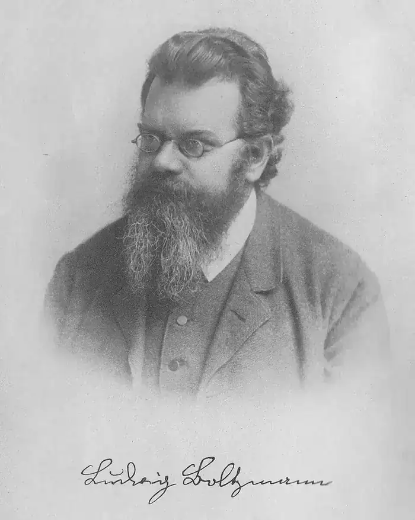

The idea
Ludwig Boltzmann, in the 1890s, was trying to explain why the universe is not in maximum disorder. His suggestion: the whole universe is in thermal equilibrium, and our ordered patch — the observable cosmos — is a rare, enormous fluctuation.
Maps, diagrams and images


That solution has an awkward consequence, pointed out by later physicists and formalised in modern cosmology. If the universe fluctuates eternally, it will produce, at some rate, ordered configurations — including observers. And it is vastly easier to fluctuate a single brain with convincing memories than to fluctuate an entire galaxy, a solar system, a planet, and a person. So in such a universe, most observers would be isolated minds appearing briefly in the void, holding false memories of a life that never happened.
Hence the name: a Boltzmann brain. You would not know. Your memories feel continuous. That is precisely what the thought experiment specifies.
Why physicists take it seriously
Because it is a reductio ad absurdum used inside cosmology. If a model predicts that Boltzmann brains vastly outnumber ordinary observers like us, that model is in trouble — you should not be one, and the theory says you probably are. So the calculation is a filter on cosmological models, not a claim about your biography.
This is a live technical argument. Papers with titles like “Why Boltzmann Brains Are Bad” (Boddy, Carroll and Pollack, 2016) work through what our observations imply for models of the early universe, eternal inflation, and the arrow of time. Some proposed fixes involve the universe having a finite total lifetime, or an initial condition so special that the required fluctuations are astronomically suppressed.
It connects to a second puzzle the archive covers elsewhere: why entropy was low in the past at all. The arrow of time, the cosmological constant, and the fine-tuning debates all touch the same territory as the structure of the cosmos.
It does not say you are probably a brain in the void. It says that under specific eternal-fluctuation models you would be — and that this is a strong argument against those models. The conclusion is about the theory, not about you.
It does not provide evidence for idealism, or a soul, or a simulation. In fact it is a warning against exactly that style of argument: “your memories could be false, therefore reality is suspect”. See Last Thursdayism, which is the same move with no physics attached.
It is not testable directly. You cannot check whether your memories are planted — that is the whole premise. What is testable is the cosmological model that predicts the relative numbers, and that is where the argument does its work.
Why it is the archive's favourite kind of entry
Because it is genuinely unsettling, genuinely mainstream, and genuinely unresolved — the combination the archive exists to document. It is not a conspiracy, not a hoax, and not a fringe claim. It is a consequence that physicists do not like, drawn from models that otherwise work, and handled by arguing about the models.
Compare many worlds: also mainstream, also uncomfortable, also argued about in journals rather than in documentaries. The rule the archive keeps applying is that the difference between a live scientific debate and a fringe claim is not the strangeness of the conclusion. It is what would count as evidence against it, and whether anyone is looking.
Sources for this page
- Wikipedia, “Boltzmann brain” — origin, the fluctuation argument, proposed resolutionsen.wikipedia.org
- Boddy, Carroll & Pollack (2016), “Why Boltzmann Brains Are Bad”arxiv.org
- Stanford Encyclopedia of Philosophy, “Boltzmann” — the statistical originsplato.stanford.edu
- Carroll, “The Universe and the Arrow of Time” (preposterous universe blog)preposterousuniverse.com
Open resources on this topic
- BookAre there Boltzmann brains in the vacuum — ['Matthew Davenport', 'Ken D. Olum'] · 2010 (Internet Archive, free to read)
- BookReturn of the Boltzmann Brains — Don N. Page · 2006 (Internet Archive, free to read)
- BookBoltzmann brains and the scale-factor cutoff measure of the multiverse — ['Andrea De Simone', 'Alan H. Guth', 'Andrei Linde', 'Mahdiy · 2010 (Internet Archive, free to read)
- PapersOpen-access articles: DOAJ · PubMed Central · Internet Archive Scholar
- BooksPublic-domain and borrowable copies: Open Library · Project Gutenberg · Google Books
Cite this page
Momin, S. (2026). Boltzmann Brains. The Larger World Archive. https://drsamonline.github.io/LARGE_GLOBE/boltzmann-brain.htmlMomin, Sohil. “Boltzmann Brains.” The Larger World Archive, 2026, https://drsamonline.github.io/LARGE_GLOBE/boltzmann-brain.html.Momin, Sohil. “Boltzmann Brains.” The Larger World Archive, 2026. https://drsamonline.github.io/LARGE_GLOBE/boltzmann-brain.html.@misc{boltzmann2026boltzmann,
author = {Momin, Sohil},
title = {Boltzmann Brains},
year = {2026},
howpublished = {The Larger World Archive},
url = {https://drsamonline.github.io/LARGE_GLOBE/boltzmann-brain.html},
note = {Last reviewed 20 November 2026}
}Last reviewed 20 November 2026 · Corrections policy · this page is not peer reviewed